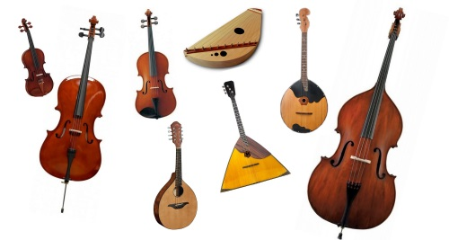
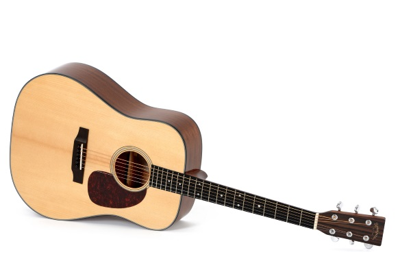
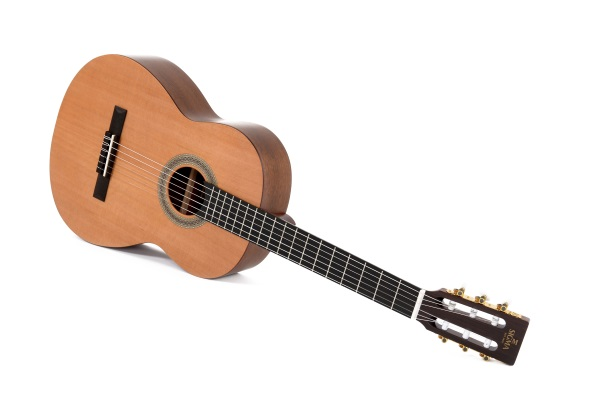
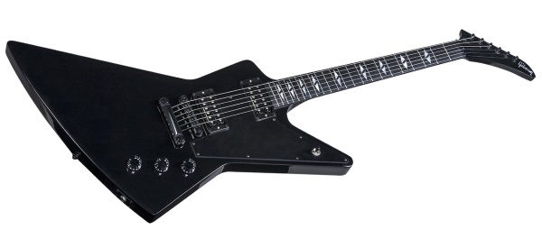
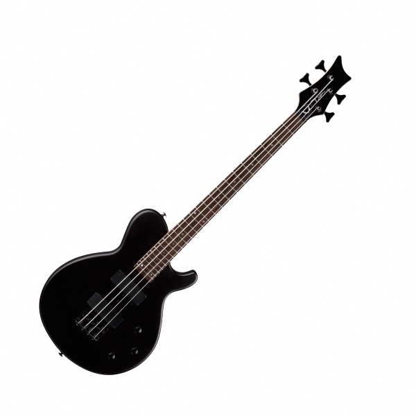
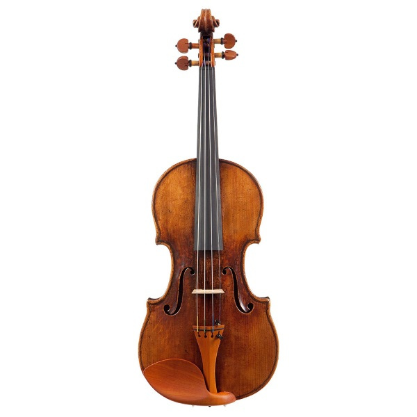

Блог музыканта
Существует множество музыкальных интсрументов и сегодня я хотел бы поговорить о популярных струнных инструментах. Струнных инструментов существует немало, вот только некоторые из них:
Все струнные инструменты мы сегодня рассматривать не будем, остановимся на самых популярных, а к другим вернёмся в следующий раз.

Акустическая Гитара
Наверное, наиболее распространённый музыкальный инструмент сегодня. Его звучание можно услышать в различных жанрах

Классическая Гитара
Данный инструмент очень схож с акустической гитарой, однако несколько отличается от неё по своему строению и звучанию.

Электрогитара
В этом интсрументе колебание струн снимает звукосниматель, передавая сигнал в усилитель, а затем в динамик. В результате звук гитары можно изменить различными эффектами. Первый прототип этого инструмента появился в 30-е годы XX века, почти сразу же он вошёл в Джаз и Блюз, а позже в Рок и Метал.

Бас гитара
По своему строению и принципу работы этот инструмент схож с электрогитарой. Предком этого инструмента был не акустический бас, как можно подумать, а контрабас. Электроника дала возможность не делать инструмент таким большим, как контрабас, и не потерять при этом звуковые качества

Скрипка
Современный вид скрипки сложился в XVI веке, в Италии. Этот инструмент получил так же широкое распространение во многих жанрах музыки, но чаще всего скрипку можно услышать в симфоническом оркестре.

Какой инструмент предпочитаю лично я?
Мне нравятся разные музыкальные инструменты и жанры музыки. Но основные мои инструменты - это гитара и электрогитара
ТЕСТОВЫЙ САЙТ
Студента Казимиренко М.А. группы КС-302
2020 г.